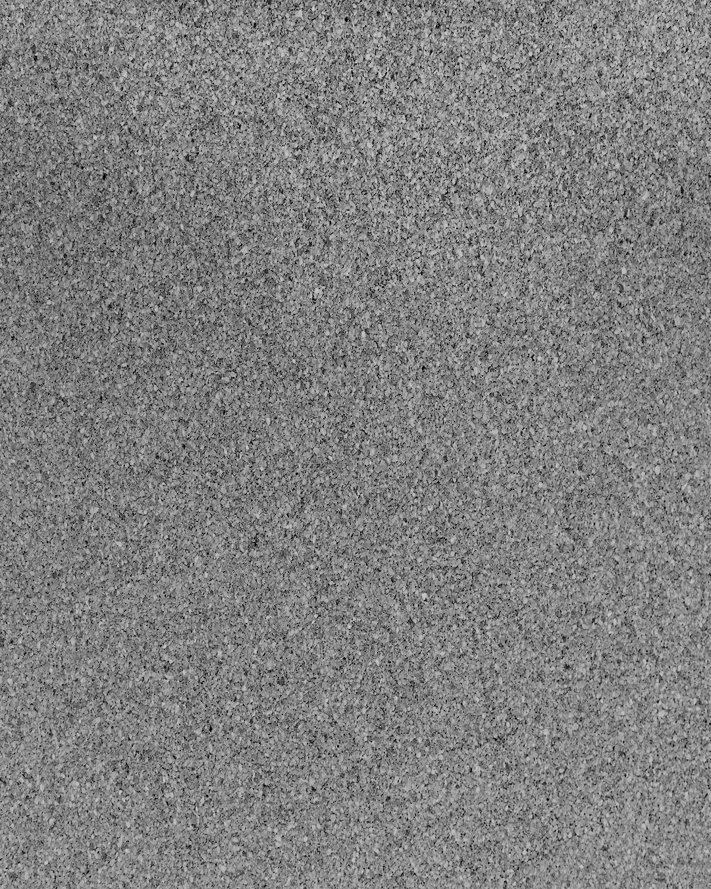
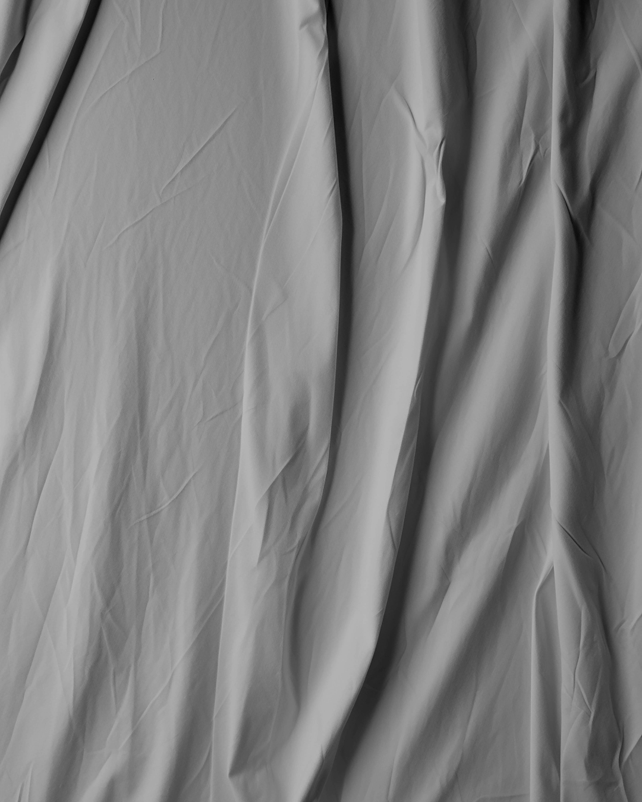
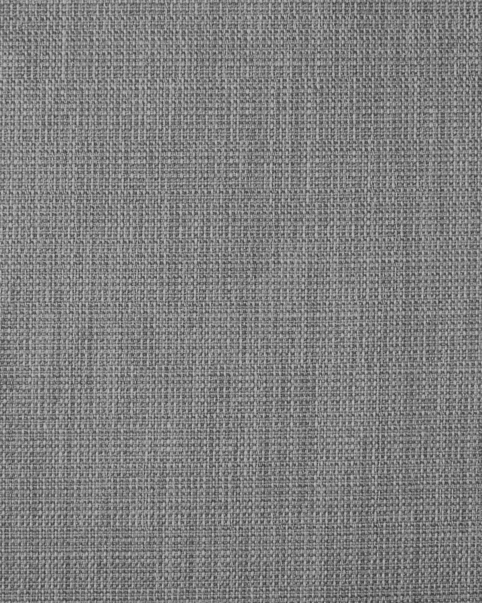

minha cliente queria um feed
queacolhe


e eu entreguei isso →
@itsemsdesign
primeiro, ocarrossel
8 lâminas, do gancho ao convite
depois, ofeed

e osposts
6 posts, cada um com a sua ideia
quer um feed assim?
me chama nadm
ENTRADA ÚNICANº 0001
o seu próximo
feed.
válido pra: sua marcaretirar na: dm
AGENDA ABERTA
@itsemsdesign
me conta da sua marca
que eu te explico como funciona
que eu te explico como funciona
 @itsemsdesign
@itsemsdesign